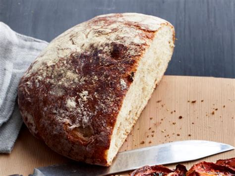

Bread

About This Recipe
Humans have been making bread for thousands
of years and this recipe is as close to that
bare-bones tradition as you can get. Perhaps
only difference would be that in our modern
recipes, we include yeast that allows the bread
to rise.
Ingredients
- 4 Cups of All-Purpose Flour
- 2 Cups of Water
- 2 Tsp. of Salt
- 2 1/4 Tsp. of Yeast, or One Standard Packet
- About 1 Tbsp. of Sugar
Directions
- Mix the sugar in the water. Ideally the water will
be warm but not hot. Mix in the yeast and set aside
to allow yeast to activate.
- In a separate larger bowl, mix the flour and salt.
- Once the yeast has activated, slowly mix the yeast
mixture in with the flour. Mix thoroughly, but there's
no need to knead.